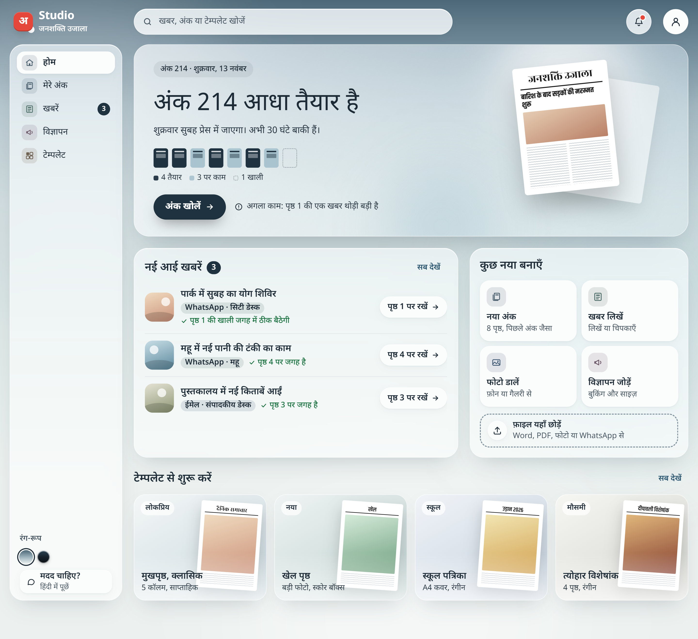
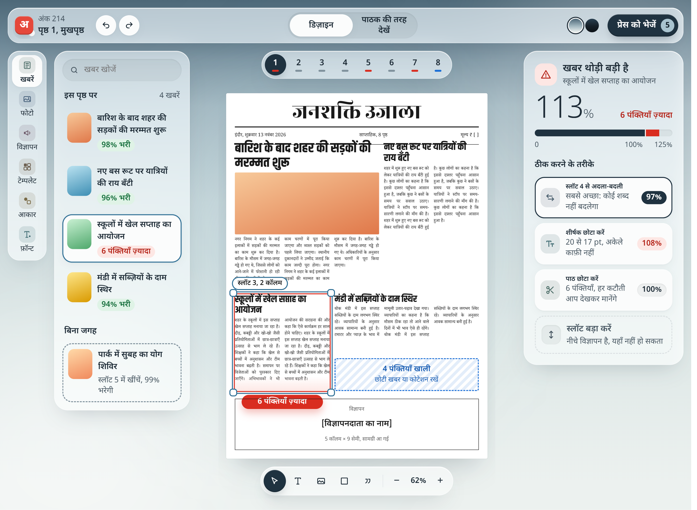

Studio UI v2: the boards written down
Source: ui/Studio — UI UX v2.html (D-079). The full write-up is docs/design/ui-v2.md. No app code was written. Every number on the boards is a mockup value.
The two boards


What changed
| File | Change |
|---|---|
docs/design/ui-v2.md | New. Look, Home and Editor behaviour, data each screen needs, Phase 1 scope map, 17 conflicts with UX_SPEC, and proposals. |
docs/DECISIONS.md | D-079 appended: ui/ is the replacement spec from D-078. |
docs/DESIGN_GAPS.md | G17–G22 added (conflicts; UX_SPEC wins until Amal decides). |
Conflicts that need Amal (UX_SPEC wins until then)
| Gap | Board does | UX_SPEC says |
|---|---|---|
| G17 | प्रेस को भेजें works while 5 problems are open, says "छप गया", shows confetti, auto-publishes the e-paper | Run जाँच first; honest status; calm success; confirm before publishing |
| G18 | Trim is applied in one click | Each cut is reviewed (no silent change) |
| G19 | 7-button icon-only toolbar; status shown by colour alone; drag-only | At most 5 buttons, each with a word; icon + word; button alternatives |
| G20 | No save status, no editor help, 5 s toast, स्लॉट/पृष्ठ/टेम्पलेट | Status always visible, same help button everywhere, 8 s toast, जगह/पन्ना/ढाँचा |
| G21 | Dark theme, glass blur, tilt, 450–800 ms springs | Light + A+ + high contrast; calm; motion 150–200 ms; low-end Android |
| G22 | Permanent right inspector; 5-item nav | Contextual toolbar; at most 4 top items plus the issue checklist |
Checks
| Check | Result |
|---|---|
npm test | 447 passed, 0 failed (docs only; no code changed) |